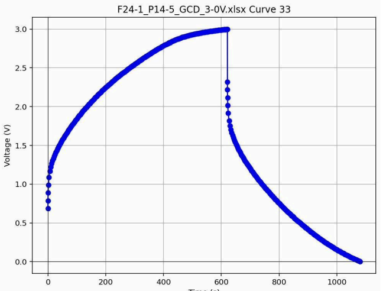
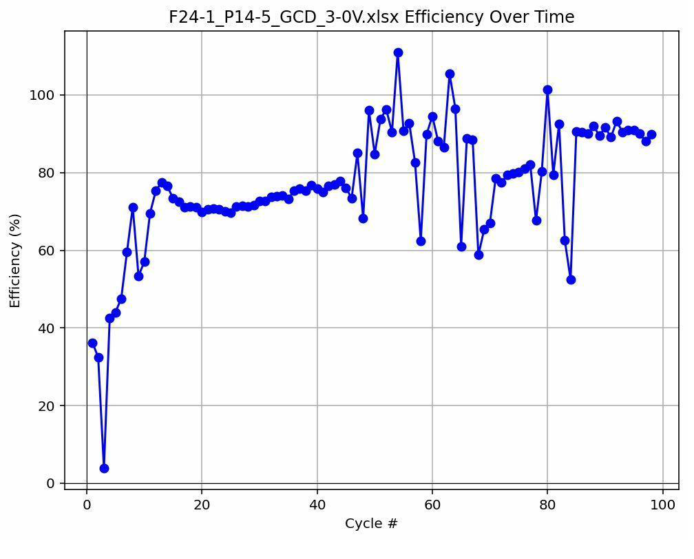
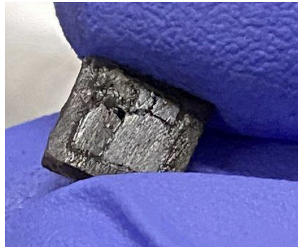
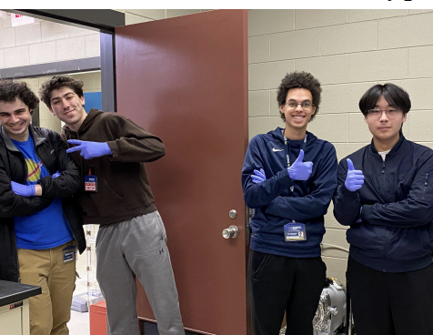

Project: Chip Scale Power & Energy VIP
- Program
- Georgia Tech Vertically Integrated Projects (VIP)
- Project
- Chip Scale Power and Energy (HASP)
- Sub-Team
- Characterization
- Semester
- Spring 2026
- Advisor
- Dr. Ready
What We Are Building
Our VIP team fabricates supercapacitors that will be launched to high altitudes aboard NASA's High Altitude Student Platform (HASP), a balloon-based research program sponsored by NASA and LSU Space Grant. The goal is to test how these supercapacitors perform under the extreme conditions of near-space flight.
The project is split into four sub-teams: Fabrication builds the supercapacitors using carbon nanotube (CNT) electrodes and chemical coatings. The Supercapacitor Design team works on the electrolyte materials (PVA gel mixed with KOH or ionic liquids). Systems Design handles the DAQ board and PCB that will fly on the payload. And my team, Characterization, tests the finished supercapacitors to measure their electrical properties before they go up.
My Role on the Characterization Team
I work with the Characterization sub-team, where our job is to evaluate the performance of each supercapacitor the Fabrication team produces. We run three main types of tests:
- Cyclic Voltammetry (CV) using the Gamry instrument. This test sweeps voltage at a constant rate while measuring current. The area of the resulting CV curve tells us the average capacitance of the supercapacitor. A larger enclosed area means more charge storage.
- Galvanic Charge Discharge (GCD) using the Arbin instrument. We hold current constant at 10 mA and measure how voltage changes over time as the supercapacitor charges and discharges. The voltage drop at the transition from charge to discharge tells us the internal resistance. We typically run 100 cycles per sample.
- Scanning Electron Microscopy (SEM) to image the carbon nanotube forest on half-assembled supercapacitors. The SEM fires an electron beam at the sample surface and produces high-magnification images that let us check the height and uniformity of the nanotubes.
Results and Observations
We tested the F24-1 P14 supercapacitor (ionic liquid electrolyte) on the Arbin at 3.0V. The GCD curves show the expected logarithmic charge and discharge behavior: voltage climbs quickly at first as the large voltage difference drives high current, then levels off as the capacitor approaches the supply voltage. Discharge follows the inverse pattern.
Over 100 cycles, we observed that capacitance starts high (around 1.75 mF) and gradually decreases to roughly 0.5 mF. This is expected because GCD testing is destructive to the supercapacitor material. Resistance fluctuated in the 30,000 to 60,000 Ohm range. Efficiency started low (below 40%) but climbed to 70-90% within the first 10-20 cycles as the electrolyte wet the electrode surfaces and lowered resistance.
We also characterized a set of KOH-based supercapacitors made by the Design team. These did not perform well: the CV curve area was very small, indicating poor charge storage. The GCD on the KOH samples produced a square wave instead of the expected logarithmic curve, suggesting the supercapacitor was not functioning as intended.
During testing on March 3, one of the supercapacitors cracked, which we documented. This kind of structural failure is something the team needs to address before flight-ready units are produced.

GCD Curve (F24-1 P14, 3.0V, Curve 33) - Voltage vs. Time showing charge/discharge behavior

Efficiency Over Time - Coulombic efficiency rises from ~35% to 70-90% as the electrolyte wets the electrodes

Cracked supercapacitor observed during testing - structural failure to address before flight
The Characterization Team

Characterization team members in the lab during a testing session (Spring 2026)